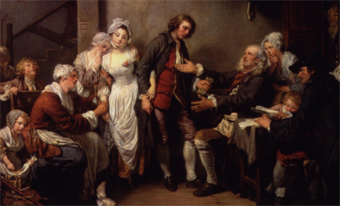
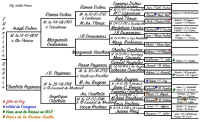

|
Jacques had the same first name as his father; he was the 7th generation
to live in Canada.
He was born in wartime, during the conflict history calls the
War of 1812, between Canada and the United States of America. In Lower Canada,
the decisive battle was Châteauguay, on October 26, 1813.
Three days later, on October
29, 1813, our ancestor Jacques was born in Saint-Laurent, Montréal.
He was the second son of Jacques Charette and Marguerite Varin. His
godparents were Louis de Carry and Marguerite Hunault. The war would end in 1814, but the country's
economy suffered badly from it. Note that in Europe, too, there was
war from 1812 to 1814; it would bring about the downfall of the Emperor Napoleon.
In 1832 a cholera epidemic from Europe,
the same one Jean Giono describes in his novel Le Hussard sur le toit (The Horseman on the Roof), claimed
thousands of victims in Canada. That summer, on Place
d'Armes, a shooting in which three Canadiens were killed by the British army clearly showed the
climate of political tension in the country.
 In Sainte-Anne-des-Plaines, Terrebonne county, on November 16, 1835, Jacques married Théotiste
Dubois, daughter of Joseph Dubois and Charlotte
Papineau. The marriage record states that Jacques is a
"farmer, minor son of Jacques Chaurette and Marguerite
Varin of this parish" and that Théotiste is the "minor
daughter of Joseph Dubois, farmer, and Charlotte Papineau of this
parish." So Jacques and his father-in-law had the same occupation:
farmer.
Of course, seeing the name Papineau, we may immediately
wonder whether there is a link with "the Papineau family"
that left its mark on our history.
And
yes, Charlotte, Jacques's mother-in-law, was related, and so are we by the
same token, to the famous Papineau family.
Charlotte and Louis-Joseph were of the same generation; they
were second cousins.
|
CHART SHOWING THE RELATIONSHIP BETWEEN CHARLOTTE PAPINEAU,
JACQUES CHARETTE'S MOTHER-IN-LAW, AND
LOUIS-JOSEPH PAPINEAU
|
Samuel Papineau + Catherine Quevillon
|
Pierre Papineau + M-J. Brignon
|
brothers |
Joseph Papineau + M-J. Baudry |
J-Baptiste Papineau + Angélique Ouellet
|
first cousins |
Joseph Papineau+ M-R. Cherrier |
Charlotte Papineau
|
second cousins |
Louis-Joseph Papineau
|
Here is Théotiste Dubois's ancestral line

It includes Filles
du Roy (King's Daughters), soldiers of the Carignan regiment,
heroes of Rivière-Ouelle (against Phips in 1690) and people who came
with the Grande
Recrue (Great Recruitment) of 1653.
(To print, choose Landscape mode)

Jacques and Théotiste move to the Pays-d'en-Haut.
 For most people of that time, the known world ended at the
Laurentians. These mountains formed an impassable barrier.
The
young couple settled in Saint-Jérôme, Terrebonne county. Why
that choice? Often
members of the same family followed one another: one of them would
settle in a newly opened area, then urge his
brothers and brothers-in-law to come and settle there too. That is no doubt
what happened, since at least two
of Jacques's brothers and one of his sisters married in Saint-Jérôme and lived
in the area. Several Charettes still live there today. For most people of that time, the known world ended at the
Laurentians. These mountains formed an impassable barrier.
The
young couple settled in Saint-Jérôme, Terrebonne county. Why
that choice? Often
members of the same family followed one another: one of them would
settle in a newly opened area, then urge his
brothers and brothers-in-law to come and settle there too. That is no doubt
what happened, since at least two
of Jacques's brothers and one of his sisters married in Saint-Jérôme and lived
in the area. Several Charettes still live there today.
The
first child of Jacques and Théotiste was born in April 1837. The following autumn came the Patriotes' Rebellion. Several
more children followed, including two sets of twins.
The family
moved to Saint-Sauveur-des- Monts in 1853, where the couple's last two
children would be born.
Jacques was a farmer and day labourer. These occupations appear in
the baptism records of the couple's many children. Notably,
in most of these records the priest added the words "father
absent". So it seems Jacques often worked far
from home, whatever the season. Let's not forget that at
the time a child was baptized very soon after birth,
the same day if possible.
Jacques and Théotiste move to Saint-Henri-des-Tanneries.
Michel, Jacques's youngest brother, married a girl from
Saint-Henri-des-Tanneries in November 1870. He appears in
the Lovell* directory for 1870-1871 on rue Lemaire, Tannery West; his
occupation is laborer.
Was this what prompted Jacques's family to move to
Saint-Henri in the early 1870s? Jacques would soon be sixty;
life in an industrialized town no doubt seemed easier
for living out his last years. In any case, from
then on we find several Charettes, all
related, brothers, uncles, cousins, in Saint-Henri-des-Tanneries.
Starting with the 1871-1872 Lovell* directory, we find Jacques and
his family in Saint-Henri. His occupation is laborer. In 1871 he was
on rue Renaud. From 1872 he lived on rue Saint-Antoine.
Note that in those years no house numbers were listed in
the directories, only the street name.
In 1876 house numbering began, and Jacques was at 1100
Saint-Antoine.
His son Alphonse, married since February 1873, and his young family
lived with them. That makes all the more sense since 1873 saw the start of a
worldwide economic crisis that would bring bankruptcies,
factory closures and unemployment for several years. In 1878 we find Jacques, carpenter, at 1180
Saint-Antoine. The following year he was back at 1100 Saint-Antoine, where Alphonse was still
living. In 1880 Alphonse moved close by, to 1098 Saint-Antoine. His
parents went on living at 1100 Saint-Antoine.
In the federal census of 1881* we find Jacques's
household made up of:
- Jacques Charrette, 67, day labourer
- Théotiste Charrette, 62
- Hileire Charrette, 20, drape maker
- Eliza Charrette, 16, apprentice dressmaker
- Joseph Charrette, 18, day labourer
Note that there are
often errors in the information and dates recorded
in a census, because the census taker wrote names down in his own way, and the people counted, often
unable to read or write, could not help him.
What's more, in the case of the 1881 census, the
transcription of the data, done by the Mormons,
is the source of several errors
because they did not understand French.
Conclusion: combining other sources, we can say that in 1881 Jacques was living in
Saint-Henri with his wife
and his three youngest children, Hélène, born in 1861, Alice, born in
1865, and Joseph, born in 1863. The two young women worked in a factory,
one making sheets, the other as an apprentice dressmaker. There was no shortage of
factories in Saint-Henri in the second half of the
19th century.
In 1882 Jacques moved to 1102 Saint-Antoine, then in 1887 he went back to 1100
Saint-Antoine.
His name appears in the Lovell* directories until 1892. Note that an occupation
is always listed next to his name (laborer or carpenter).
He never retired. Remember that there was not yet any
social security or old-age pension.
Théotiste died in Saint-Henri on
May 21, 1890, and Jacques on December 17, 1897, at the age of 84.
* The
Lovell directories cover July 1 of one year to June 30 of
the next. The information was gathered door to door in May. In
some directories, owners are marked with an asterisk.
The occupation is often listed, as is the employer. You can
search by the person's name or by address. They are
available on the website of the Archives
nationales.
* The
1881 federal census can be found on the Mormons'
genealogy website.
JACQUES AND THÉOTISTE DURING THE PATRIOTES'
REBELLIONS
During the rebellions of 1837-1838, Jacques and Théotiste were a young couple
in Saint-Jérôme with a small child. We don't know their
thoughts or actions, but there can be no doubt that these
grave events had a great impact on their lives. Did they side
with the rebels or with the loyal militiamen?
A significant part of a people reputed to be isolated, backward and
illiterate was then swept,
more or less consciously, by a
current of thought that stood
at the forefront of the Western world.
The Patriotes' rebellion belongs to its era, that of Romanticism,
which burst out in all the arts and echoed throughout
society, turning everyone's life upside down. This intellectual and cultural movement, often wrongly dismissed as
sentimentality, had its origins in the French Revolution. To understand
the true meaning that the poets, painters and
thinkers of the late 18th and 19th centuries gave it, we must
look to the profound upheavals the Enlightenment brought about
in the mentality of the time. Reason ruled the Age of
Enlightenment: the world was the work of a higher mind, God,
while the universe was governed by laws meant for
the well-being of humanity. Those who saw themselves as
Romantics, however, had a very personal vision of the world: artists
could not stay indifferent to the events and great
changes of their time. Indeed, the material progress brought by
the Age of Enlightenment had to go hand in hand with political
and spiritual emancipation. The Romantics were galvanized by the first
victories of the French Revolution. For them, believers in
popular uprising, life then took on a turn full of
promise and hope.
|

Liberty Leading the People, Eugène Delacroix, 1830
|
Several revolutions shook the Western world at this time:
- The American Revolution, which led to the Declaration
of Independence of 1776.
- The French Revolution, which began in 1789 and became a
real saga lasting many years.
- The Peninsular War in Spain, 1808 to 1814. It was a Napoleonic war,
but the Spanish call it the "War of Independence"
and see it as a founding episode in their history.
- The Greek War of Independence in 1822.
- Simón Bolívar led the revolution in Latin America. A South American
general and statesman and a patriot, he led the
wars of independence of Spain's South American colonies from
1813 until his death in 1830.
- The Russian Decembrists, an insurrectionary movement
demanding the abolition of serfdom, were crushed in a bloody
uprising in 1825.
- Paris lived through days of revolution in 1830.
- Giuseppe Mazzini founded the Young Italy movement in 1831.
- In 1848 a wave of revolution spread across all
of Europe. In Germany, it laid the groundwork for a
new Constitution. The emerging middle class could thus
express its wish to be led by a liberal government.
- In 1849, during another insurrection in Russia, several insurgents
were sent to penal servitude, among them Dostoevsky. He bore witness to his life as an insurgent
and a convict in his
writings.
 The cause of liberty The cause of liberty
Secret
organizations multiplied around the world: the Charbonnerie (Carbonari),
the Tugendbund, the Sons of Liberty, ... Social unrest carried
a wind of freedom through several countries. Writers,
philosophers, economists, scientists: many championed progress
and an ideal of sharing goods equally. The Communist Manifesto was
published by Marx and Engels in 1848.
So the rebellions of 1837-1838
in Lower and Upper Canada belong to this spirit of
seeking liberty and equality between individuals and peoples.
An English social thinker of the stature of John Stuart Mill sympathized
with the Patriotes, who defended ideas as advanced
as those of the London workers' movement. The principle of
nationalities, upheld by the Patriotes, was the expression of a
new liberal, democratic and anti-imperialist philosophy
sweeping across Europe, and not the forerunner of French-Canadian
"nationalism", a hegemonic right-wing doctrine
put forward later precisely to push back against that
progressive philosophy.
This uprising led to the union of the two Canadas in 1840 and the coming
of responsible government in 1848. Elsewhere in the world, things
were changing too, under pressure from people fighting to
advance their causes. A few examples: the Spanish Inquisition was
abolished in 1834, Italy was unified in 1861, Russia's serfs were
freed in 1861, and slavery was abolished in the United States in 1865.
Battle by battle, society moves forward, given time.
|